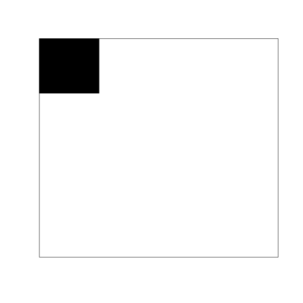
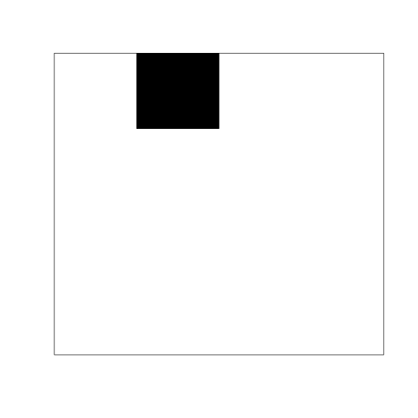

13 Joint quantities and complex data types
\[ \DeclarePairedDelimiters{\set}{\{}{\}} \DeclareMathOperator*{\argmax}{arg\,max} \]
Quantities of more complex types can often be viewed and represented as sets (that is, collections) of quantities of basic and possibly different types. A useful, though approximate, distinction can be made on how these sets of basic quantities are made.
13.1 Joint quantities
Some sets of basic quantities are just that: simple collections of quantities, in the sense that they do not have new properties or allow for new kinds of operations. We shall call these joint quantities when we need to distinguish them from quantities of a basic kind; but usually they are also simply called quantities.
The values of a joint quantity are just tuples of values of its basic component quantities. Their domain is the Cartesian product of the domains of the basic quantities.
Consider for instance the age, sex1, and nationality of a particular individual. They can be represented as an interval-continuous quantity \(A\), a binary one \(S\), and a nominal one \(N\). We can join them together to form the joint quantity “(age, sex, nationality)” which can be denoted by \((A,S,N)\). One value of this joint quantity is, for example, \((25\,\mathrm{y}, {\small\verb;F;}, {\small\verb;Norwegian;})\). The domain could be
1 We define sex by the presence of at least one Y chromosome or not. It is different from gender, which involves how a person identifies.
\[ [0,+\infty)\times \set{{\small\verb;F;}, {\small\verb;M;}} \times \set{{\small\verb;Afghan;}, {\small\verb;Albanian;}, \dotsc, {\small\verb;Zimbabwean;}} \]
Discreteness, boundedness, continuity
A joint quantity may not be simply characterized as “discrete”, or “bounded”, or “infinite”, and so on. Usually we must specify these characteristics for each of its basic component quantities instead. Sometimes a joint quantity is called, for instance, “continuous” if all its basic components are continuous; but other conventions are also used.
13.2 Complex quantities
Some complex quantities can be represented as sets of quantities of basic types. These sets, however, are “more than the sum of their parts”: they possess new physical and mathematical properties and operations that do not apply or do not make sense for the single components.
Familiar examples are vectorial quantities from physics and engineering, such as location, velocity, force, torque. Another example are images, when represented as grids of basic quantities.
Consider for example a 4 × 4 monochrome image, represented as a grid of 16 binary quantities \(0\) or \(1\). Three possible values could be these:
  
represented by the numeric matrices \(\begin{psmallmatrix}1&0&0&0\\0&0&0&0\\0&0&0&0\\0&0&0&0\end{psmallmatrix}\), \(\begin{psmallmatrix}0&1&0&0\\0&0&0&0\\0&0&0&0\\0&0&0&0\end{psmallmatrix}\), \(\begin{psmallmatrix}0&0&0&0\\0&0&0&0\\0&0&0&0\\0&0&0&1\end{psmallmatrix}\).
From the point of view of the individual binary quantities, these three “values” are equally different from one another: where one of them has grid value \(1\), the others have \(0\). But properly considered as images, we can say that the first and the second are somewhat more “similar” or “closer” to each other than the first and the third. This similarity can be represented and quantified by a metric over the domain of all such images. This metric involves all basic binary quantities at once; it is not a property of each of them individually.
More generally, complex quantities have additional, peculiar properties, represented by mathematical structures, which distinguish them from simpler joint quantities; although there is not a clear separation between the two.
These properties and structures are very important for inference problems, and usually make them computationally very hard. The importance of machine-learning methods lies to a great extent in the fact that they allow us to do approximate inference on these kinds of complex data. The peculiar structures of these data, however, are often also the cause of striking failures of some machine-learning methods, for example the reason why they may classify incorrectly, or correctly but for the wrong reasons.